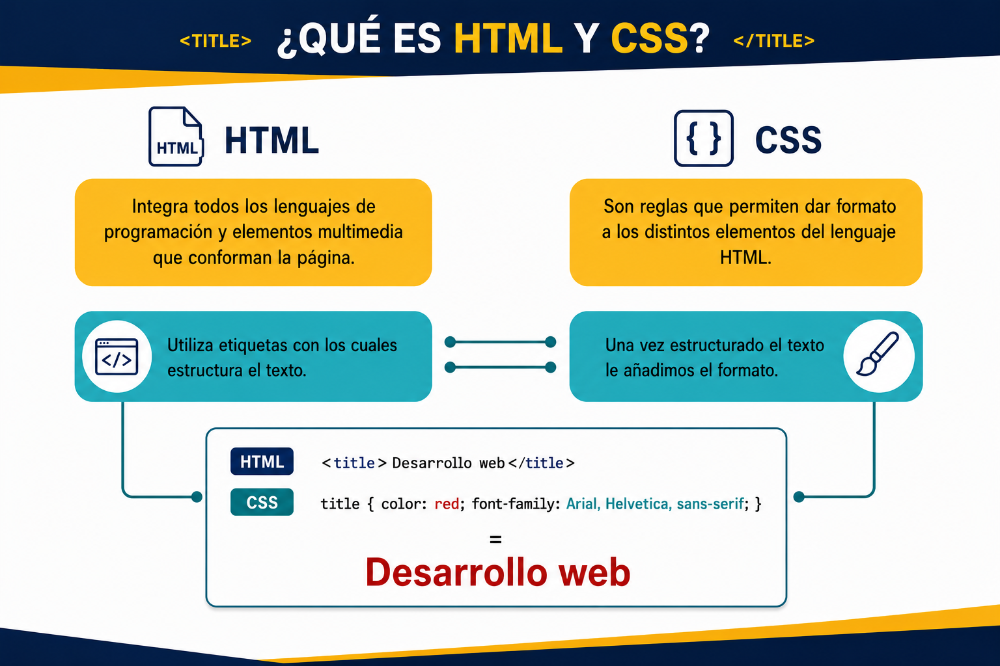

A partir de la imagen que se te proporciona, debes desarrollar el documento HTML con sus estilos con CSS:

#ddd.#111.cambria.16px.1.6#ffd700.Calibri.30px.h2 h3 h4):#a00.Calibri.24px.3px
El color de cada item de la sección Datos del libro es amarillo #060 y es font-weight: bolder.
El texto Gotham City, Batimóvil, Robin, Batgirl, Alfred, El Joker, Dos Caras, Acertijo, Murciélago, Caballero Oscuro y Orignes:
18px.
#ffd700
El texto: inteligencia, entrenamiento físico, gadgets, Bruce Wayne, aliados, enemigos y recursos:
#000.
#ffd700.
6px.
2px.
4px.
color - Color de fuente.
background-color - Color de fondo.
font-family - Estilo de fuente.
line-height - Espaciado entre lineas.
text-align - Alineación del texto.
border-radius - -Redondea los bordes.